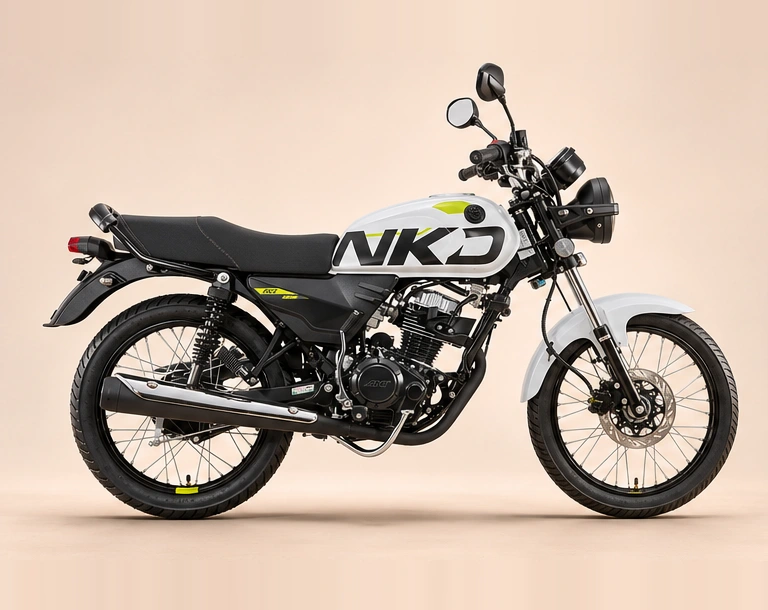

Dale tu toque.
Selecciona un accesorio y descubre tu próxima versión.
● Vista previa
NKD 125 / BlancoOriginal · Sin accesorios
01 / Tu moto de referencia
AKT NKD 125
Urbana / 125 cc / Blanco
02 / Añade tu estilo0 seleccionados
Total de accesorios0 €
Precios de ejemplo · IVA incluido · Moto no incluida